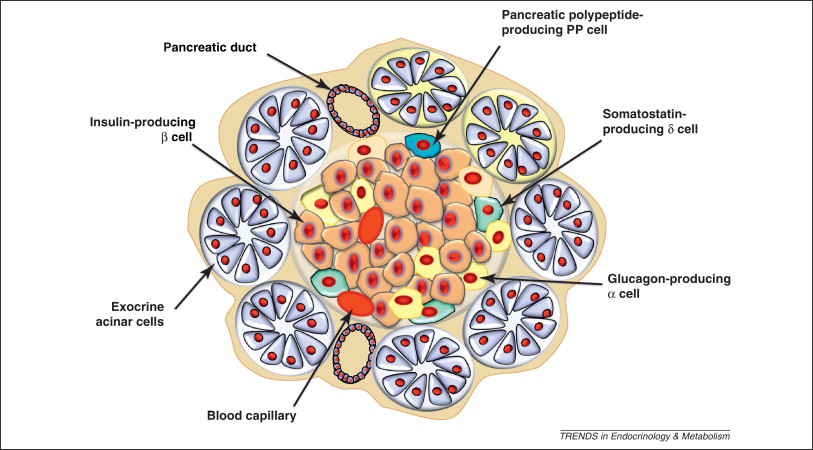

, between 4.4 to 6.1 mmol/L. The major tissues responsible for regulating glucose levels are listed in Table [glucose-sites] These levels need to be re-established after changes in feeding status, or energy utilization. In general, when glucose levels decrease, glucagon is released from alpha cells of the pancreas to promote glucose production, either from glycogen breakdown or gluconeogenesis. Alternately, after a meal when glucose levels increase, insulin is secreted from beta cells of the pancreas causing glucose levels to decrease.
| Process | Tissue |
|---|---|
| Insulin Stimulated | |
| Glucose Uptake | Muscle and Fat |
| Glucose Oxidation | Muscle, Brain |
| Glycogen Storage/Release | Liver and Muscle |
| Gluconeogenesis | Liver |
For the purposes of the acute maintenance of glucose homeostasis, four organs are the most important; the pancreas, liver, muscle and adipose tissue. The pancreas senses changes in glucose levels and responds by releasing either glucagon or insulin.
via passive transport from the blood into most tissues including liver, pancreas, kidneys and the brain. However, for glucose to enter into muscle and fat tissue, insulin is required. This is accomplished by moving GLUT4 transporters from intracellular storage sites to the plasma membrane, allowing for glucose influx.
. To form glycogen, glucose must first be converted through glucose-1-phosphate into UDP-glucose. This activated form of glucose is then added onto existing glycogen chains through the activity of an enzyme named glycogen synthase. In addition to being regulated by protein phosphorylation and sub-cellular location, glycogen synthase is also allosterically activated by glucose-6-phosphate, promoting increased glycogen synthesis when glucose levels in the cell are high.
. This enzyme hydrolyses glycogen, releasing glucose-1-phosphate, which can then be dephophorylated into glucose for glycolysis or release into the blood stream. This is the preferred source of short term glucose maintenance. In addition to post-translational modifications and recruitment to the glycogen pellet by accessory proteins, glycogen phosphorylase is allosterically activated by energy stress such as increases in AMP, or negatively by increases in glucose-6-phosphate levels.
. These typically include amino acids, lactate and the products of fatty acid oxidation. The vast majority of gluconeogenesis occurs in the liver, and generally is important for glucose production from proteins and lipids after glycogen stores are depleted. This process is similar to reverse glycolysis though in several cases different enzymes are used. The rate limiting enzymes in gluconeogenesis are phosphoenolpyruvate carboxykinase, fructose-1,6-bisphosphatase and glucose-6-phosphatase. These enzymes are under both transcriptional and post-translational control as described below.
, for example during fasting, the primary source is circulating glucose, followed by the the breakdown of glycogen and then the production of new glucose (gluconeogenesis) from proteins and lipids. At the same time, the wasteful synthesis of new glycogen is stopped. When glucose levels are too high, the first response is uptake and oxidation by the muscle, followed by glycogen synthesis and then by lipogenesis. At this time, gluconeogenesis (which is not needed) is stopped.
In order to balance the energy requirements of all tissues, blood glucose is primarily controlled via endocrine and neuroendocrine mechanisms. The primary mediators are insulin and glucagon which are secreted from the pancreas during times of hyper and hypoglycemia respectively. These two peptide hormones are released from two cell types in the pancreas, the α cells which release glucagon and the β cells which release insulin. Both cell types are located in the Islets of Langerhans within the pancreas (see Figure [pancreas-cells])(Efrat and Russ 2012)
[-5in] 
Insulin was discovered by Frederick Banting and his colleagues at the University of Toronto in 1921. They performed experiments in which they injected extracts from pancreas fractions into dogs which had their pancreas’ surgically removed. They showed that a secreted substance from the pancreas lowered blood glucose in these dogs (???). They were then able to confirm that this treatment was also effective in children with diabetes (???). This work led to Banting and John Macleod winning the Nobel Prize in Medicine and Physiology in 1923.
When glucose levels are raised, such as after a meal, insulin has four main functions, all of which serve to reduce blood glucose levels:
Promotes the uptake of glucose from the blood into muscle and adipose tissue.
Enhances the synthesis of glycogen and triglycerides in liver, adipose and muscle.
Inhibits gluconeogenesis, or the production of glucose from non-glucose precursors such as amino acids and lipids.
Promote the breakdown of glucose via glycolysis (in muscle).
Beta cells in the pancreas generate insulin and store it in pre-formed secretory granules. Insulin is generated as a pre-pro peptide and then is processed to generate two fragments, mature insulin and C-peptide. Both of these are released from the secretory granules. After the glucose mediated depolarization of beta cells in response to insulin, these secretory granules are exocytosed and their contentes are released into the blood. This happens very quickly and is known as the first phase insulin response. Upon chronic glucose stimulation, new insulin has to be made, packaged and secreted. This is known as second phase and allows insulin to be continually released over a longer time period.
Insulin functions by binding to and activating a receptor tyrosine kinase. This receptor transautophosphorylates itself generating binding sites for phosphotyrosine binding proteins known as insulin receptor substrates.
These proteins are also phosphorylated by the insulin receptor, which creates binding sites for a phosphatidylinositol-3-kinase (PI3K). This kinases generates the key second messenger in insulin signaling, phosphatidylinositol-(3,4,5)-triphosphate (PIP3). Most known functions of insulin are blocked when PI3K is inhibited (Kanai et al. 1993).
Once PIP3 is generated by insulin stimulation, it can diffuse along the internal membranes of the cells. This lipid second messenger recruits two important protein kinases, Akt (also referred to as PKB) and PDK1. Both of these proteins have domains called pleckstrin homology domains which recruit the kinases together to the plasma membrane. Once there, PDK1 and another protein kinase called mTORC2 are able to phosphorylate and activate Akt. Once activated, Akt is the most important protein kinase in mediating insulin function.
In fat and muscle tissue, insulin promotes the movement of a facilitative glucose transporter named GLUT4. Normally GLUT4 resides in intracellular compartments, but in response to insulin vesicles from these compartments fuse with the plasma membrane, inserting GLUT4 into the extracellular membrane. This allows for glucose to enter fat and muscle cells.
In both fat and muscle, the PI3K/Akt dependent signaling pathways are absolutely required for insulin stimulated glucose uptake. The major targets of Akt in this signaling pathway are AS160 and RGC1/2, two proteins which regulate the activity of small GTPases involved in GLUT4 translocation. The full mechanisms regulating GLUT4 trafficking are not yet fully understood.
The other functions of insulin, including promoting glucose uptake will provide more UDP-Glucose for glycogen synthase, and will also allosterically activate the enzyme by generating large amounts of glucose-6-phosphate. This is augmented by post-translational activation of glycogenic enzymes.
In addition to these allosteric activators, both glycogen synthase and glycogen phosphorylase are regulated by protein phosphorylation. In the case of glycogen synthase, the phosphorylated form is relatively inactive, and is resistant to allosteric activation by glucose-6-phosphate (Friedman and Larner 1963). Glycogen synthase is phosphorylated by several protein kinases including AMPK and GSK-3 (Parker et al. 1982). In addition to inactivating the upstream kinases, insulin also activates a protein phosphatase, which removes the phosphate groups. In a co-ordinated way, protein phosphorylation activates glycogen phosphorylase (Krebs and Fischer 1964). This means that when these enzymes are phosphorylated, the balance tips towards glycogenolysis, and when they are dephosphorylated glycogen is synthesized. This will be discussed in more detail in the lecture on glycogen metabolism.
The activation of glucose uptake and glycolysis leads to increased levels of several glycolytic intermediates which themselves will regulate gluconeogenesis. The most important of these is Fructose-2,6-bisphosphate which is raised during glycolysis and inhibits FBPase, one of the key rate limiting steps in gluconeogenesis. Activation of gluconeogenesis is therefore driven by an abundance of precursors, ATP and Acetyl-CoA.
In addition to these rapid effects, both G6Pase and PEPCK, two other rate limiting enzymes are regulated transcriptionally. Akt phosphorylates and inactivates the transcription factor FOXO which would normally increase the expression of these enzymes. Therefore when insulin activate the PI3K/Akt cascade, FOXO mediated transcription of G6Pase and PEPCK is decreased and the levels of these enzymes are reduced, decreasing gluconeogenesis. We will discuss the regulation and relevance of gluconeogenesis in a separate lecture.
When glucose levels are low, glucagon is released from alpha cells in the pancreas. This promotes the breakdown of glycogen stores in liver and muscle, and the generation of glucose from gluconeogenic precursors. Glucagon receptors exist mainly in the liver, so glucagon does not exert its main catabolic effects on either adipose or muscle tissue.
The mechanisms which underlie hypoglycemia induced glucagon release are incompletely understood. What is clear however, is that when blood glucose levels decrease, glucagon is released from the alpha cells of the pancreas into the portal vein.
Adrenergic-receptor coupled mediated cAMP synthesis was the first example of a hormonal second messenger. Earl Sutherland was interested in the regulation of glycogenolysis and he noticed that if he added adrenaline to intact cells, he could accelerate glycogen breakdown, but if he added it to lysed cells he could not. In his key experiment he treated one set of livers with adrenaline, then lysed them. He then added that lysate to a second set of livers which had already been broken. He found that there was an internal factor (later identified as cAMP) in the stimulated tissues, that could accelerate glycogenolysis in the other tissues (Rall, Sutherland, and Wosilait 1956). For this work, Sutherland won the Nobel Prize in Medicine and Physiology in 1971.
In metabolism, the main effector of cAMP in cells is Protein Kinase A (PKA). This protein kinase is allosterically activated by cAMP and phosphorylates a wide variety of important metabolic substrates. The identification of PKA and its role in carbohydrate homeostasis led to Fisher and Krebs winning the Nobel Prize in Medicine and Physiology in 1992. The primary role of glucagon is to increase blood glucose, both by mobilizing glycogen stores and inducing gluconeogenesis. The mechanisms for this are identical to those for adrenaline, as both of these hormones activate Gs-linked receptors and result in PKA activation in the liver.
As described above, glucagon stimulates the breakdown of glycogen. This proceeds via protein phosphorylation of both glycogen phosphorylase (which activates the enzyme) and glycogen synthase (which inactivates the enzyme). In combination, this leads to a breakdown of glycogen into glucose.
PKA is the primary mediator of the activation of glycogen phosphorylase. Once activated by adrenergic signaling, PKA phosphorylates and activates glycogen phosphorylase kinase. This kinase in turn, phosphorylates and activates glycogen phosphorylase(Krebs and Fischer 1956). PKA also directly phosphorylates glycogen synthase, which in concert with the activation of the other glycogen synthase kinases (notably GSK3 and AMPK) leads to increased phosphorylation and inactivation of glycogen synthase.
In addition to the activation of these protein kinases, there is a reduction of glycogen associated protein phosphatase activity. As a balance, this leads to more highly phosphorylated and therefore more glycogenolytic activities.
There are both post-translational and transcriptional mechanisms by which adrenergic signaling promotes gluconeogenesis. Similar to glycolysis, the allosteric and post-translational regulation of gluconeogenesis is rapid, while the transcriptional regulation is slower but more stable.
Post-translationally, the best studied route by which PKA activates gluconeogenesis is through inactivation of phosphofructokinase-2. PFK-2 normally generates the carbohydrate Fructose-2,6,-bisphosphate which is a positive regulator of glycolysis and a negative regulator of gluconeogenesis. The alleviation of this inhibition allows for promotion of the gluconeogenic metabolism.
Transcriptionally, the transcription factor CREB is phosphorylated by PKA where it plays a role in transcriptionally activating the rate limiting gluconeogenic enzymes PEPCK, FPBase and G6Pase. This is energetically costly, and occurs slowly. Transcriptional changes are therefore often more permanent in nature.
Since glucagon works primarily on liver tissue, different hormonal messengers function to stimulate catabolism of lipid in muscle and fat tissue. A key difference from adrenaline and glucagon, is that adrenaline also has major effects on fat and muscle tissues, as well as glycogen. Therefore, in addition to simulating hepatic gluconeogenesis and glycogenolysis, adrenaline also promotes lipid release and muscle glucose oxidation. Both adrenaline and glucagon function by stimulating adrenergic signaling and cAMP-dependent PKA activation
In adipose tissue, adrenaline induces lipolysis, via phosphorylation and activation of Hormone Sensitive Lipase (HSL), Perilipin and Adipocyte Triglyceride Lipase (ATGL). These proteins function to mobilize triglycerides into free fatty acids for use in other tissues, especially muscle. For more information on the regulation of lipolysis, see (Young and Zechner 2013). At an acute level, these do not contribute much to glucose homeostasis but are extremely important for lipid metabolism.
These hormones are elevated during times of growth or stress where it is important to keep circulating glucose available for other functions. During a prolonged fast, both GH and cortisol can be released, causing longer-lasting changes which ensure adequate blood supply to the brain.
, and are typically released from the gut. They were first described when it was noted that when equal amounts of glucose are provided either through the gut, or intravenously, the gut-supplied glucose leads to a more robust insulin secretion effect. Eventually to gut-derived peptide hormones, GLP-1 and GIP1 were described. Both of these peptides are degraded by an enzyme called DPP-4, and inhibitors of this process have provided an exciting new potential therapeutic mechanism for enhancing glucose control.
Type I Diabetes is typically caused by autoimmune destruction of pancreatic beta cells. Without these cells, the pancreas is unable to produce insulin and without careful monitoring and exogenous insulin, blood glucose levels will rise.
Type II diabetes occurs as a result of a multi-step process starting with negative feedback loops on insulin signaling. As more nutrients are stored, for example in obesity metabolic tissues become resistant to the effects of insulin, likely as a way to protect against excessive lipid storage.
As tissues become more insulin resistant, more insulin must be secreted by the pancreas to maintain normoglycemia. If insulin resistance proceeds, more and more insulin will need to be produced and secreted by beta cells. Eventually the beta cells will be unable to keep up with this demand and glucose levels will rise as the amount of endogenous or exogenous insulin is less and less effective.
Protein homeostasis is an important ongoing process that is regulated both at the level of protein synthesis and protein degradation. Protein synthesis is especially important in the context of growth and development.
There are several hormone that control protein synthesis, often mediated by a protein kinase called mTORC1. This enzyme promotes protein synthesis by increasing the rates of initiation of translation, and the rates of peptide chain elongation. For more details about how mTORC1 regulates protein production, we recommend this review(Gingras, Raught, and Sonenberg 2004).
. Insulin, as described above is secreted by the β cells of the pancreas by increased blood glucose. Elevations in amino acids, such as leucine and alanine are also potent activators of insulin secretion (Floyd et al. 1966). Insulin-like Growth Factor 1, on the other hand is produced in the liver and is regulated both nutritionally, and by the levels of Growth Hormone (GH). Both insulin and IGF1 activate receptors in peripheral tissues to promote protein production, with muscle playing a very important role. Insulin and IGF1, along with other signals such as elevations in Leucine, Lysine or Arginine lead to mTORC1 activation which promotes the synthesis of proteins.
. Growth hormone is released from the somatotroph cells in the anterior pituitary. The two primary regulators of GH secretion are the hypothalamic hormones GHRH and somatostatin Growth hormone is highest during youth while people are actively growing. As a person ages, the amount of growth hormone decreases. Growth hormone also undergoes a normal diurnal rhythm. GH levels are highest shortly after going to sleep and lower during the day. Because of this, most growth occurs during sleeping when nutrients can be used for growth and are not needed for normal activities.This hormone has two actions:
Direct actions on bone, muscle, adipocytes and liver tissue via its own receptor.
Indirect actions by promoting the release of IGF1.
Protein breakdown occurs via two mechanisms, proteolysis which targets specific proteins for degradation and autophagy which can target entire organelles. Both of these processes result in the liberation of amino acids from proteins. Unlike fatty acids (triglycerides) and glucose (glycogen) there is no standard storage molecule for amino acids, so when the body needs amino acids, a variety of proteins are catabolized.
. As described with respect to gluconeogenesis, insulin or IGF1 reduce FOXO activity. When active, FOXO transcriptionally activates proteolytic genes known as atrogenes to liberate amino acids. Therefore, when insulin/IGF signaling is active, proteolysis is reduced.
As such, cortisol promotes gluconeogenesis, by transcriptionally activating several enzymes, including G6Pase, PEPCK and pyruvate carboxylase. At the same time, cortisol promotes delivery of gluconeogenic precursors such as glycerol (from adipocyte lipolysis), lactate and alanine (from muscle tissue) to the liver. Chronically elevated cortisol leads to substantial muscle breakdown and is a major side effect of prescribed glucocorticoids.
Lipid metabolism, which we will discuss in the last unit of the course is strongly promoted by insulin and reversed by adrenaline. Triglyceride breakdown can be thought of in two phases, the conversion of triglycerides into fatty acids and glycerol and then the conversion of these fatty acids into energy
in two ways. It promotes the production of lipids from precursors, promotes the esterifictaion of fatty acids and glycerol in to triglycerides and prevents the breakdown of triglycerides into fatty acids. We will discuss the mechanisms by which insulin controls fat storage later in the semester.
they are generally released from adipose tissue as fatty acids, with the activation of β-oxidation happening concurrently in muscle. There are several hormones that regulate this, but adrenaline, which promotes both adipocyte lipolysis and muscle lipid oxidation is very important. As we will learn later in the semester, several key lipolytic and oxidative enzymes are activated by adrenaline (and PKA) mediated protein phosphorylation.
Efrat, Shimon, and Holger a. Russ. 2012. “Making β cells from adult tissues.” Trends in Endocrinology & Metabolism 23 (6). Elsevier Ltd: 278–85. doi:10.1016/j.tem.2012.03.005.
Floyd, J C, S S Fajans, J W Conn, R F Knopf, and J Rull. 1966. “Stimulation of insulin secretion by amino acids.” The Journal of Clinical Investigation 45 (9): 1487–1502. doi:10.1172/JCI105456.
Friedman, Daniel L., and Joe. Larner. 1963. “Studies on UDP G-Alphaglucantransclucosylase. III. Interconversion of Two forms of Muscle UDP-G-Alphaglucantransglucosylase by a phosphorylation-dephosphorylation reaction sequence.” Biochemistry 2: 669–75. http://www.ncbi.nlm.nih.gov/pubmed/14075096.
Gingras, A C, B Raught, and Nahum Sonenberg. 2004. “mTOR signaling to translation.” Current Topics in Microbiology and Immunology 279 (January): 169–97. http://www.ncbi.nlm.nih.gov/pubmed/14560958.
Kanai, F, K Ito, M Todaka, H Hayashi, S Kamohara, K Ishii, T Okada, O Hazeki, M Ui, and Y Ebina. 1993. “Insulin-stimulated GLUT4 translocation is relevant to the phosphorylation of IRS-1 and the activity of PI3-kinase.” Biochemical and Biophysical Research Communications 195 (2): 762–8. doi:10.1006/bbrc.1993.2111.
Krebs, E. G., and E H Fischer. 1956. “The phosphorylase b to a converting enzyme of rabbit skeletal muscle.” Biochimica et Biophysica Acta 20 (1): 150–7. http://www.ncbi.nlm.nih.gov/pubmed/13315361.
———. 1964. “Phosphorylase and related enzymes of glycogen metabolism.” Vitamins and Hormones 22 (January): 399–410. doi:10.1016/S0083-6729(08)60345-3.
Parker, Peter J, Noor Embi, F Barry Caudwell, and Philip Cohen. 1982. “Glycogen synthase from rabbit skeletal muscle. State of phosphorylation of the seven phosphoserine residues in vivo in the presence and absence of adrenaline.” European Journal of Biochemistry 124 (1): 47–55. http://www.ncbi.nlm.nih.gov/pubmed/6211353.
Rall, T W, E W Sutherland, and W D Wosilait. 1956. “The relationship of epinephrine and glucagon to liver phosphorylase. III. Reactivation of liver phosphorylase in slices and in extracts.” The Journal of Biological Chemistry 218 (1): 483–95. http://www.ncbi.nlm.nih.gov/pubmed/13278355.
Young, Stephen G, and Rudolf Zechner. 2013. “Biochemistry and pathophysiology of intravascular and intracellular lipolysis.” Genes & Development 27 (5): 459–84. doi:10.1101/gad.209296.112.